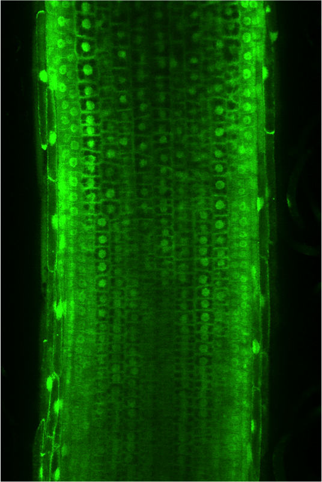

Species to be Studied: Oryza sativa, Solanum lycopersicum, S. pennellii, and Medicago truncatula
This project will establish technologies for multi-tier gene expression analyses in species of agronomic importance. The methods will be fine-tuned to interrogate activities of specific cell types that regulate plasticity of development in response to environmental stimuli, such as under extremes of water availability. Rich genetic and data resources will be provided to the community. Training of high school students through postdoctoral researchers in genomics, bioinformatics and cell biology will be enriched through mentoring and team research.
We are advancing two technologies developed for Arabidopsis for microgenomic evaluation of developmental systems and environmental responses to three species of agronomic relevance. The method of nuclear isolation, INTACT (Isolation of Nuclei TAgged in specific Cell Types) enables genome-level profiling of nuclear poly(A)+ mRNA (nuclear transcriptome), histone modifications (epigenome) and transcription factor binding.
INTACT will be paired with the TRAP (Translating Ribosome Affinity Purification) system which enables profiling of poly(A)+ mRNAs associated with ribosomes (translatome) and the occupancy of ribosomes on transcripts to estimate levels of protein synthesis. This involves use of specific promoters, such as those that define expression in specific cell types or regions of an organ, to drive expression of a nuclear membrane-targeted protein in the case of INTACT or a ribosomal protein in the case of TRAP.
The resources developed will be tailored to the targeted species but may be more broadly applied. The stable transgenics will include genotypes that will enable INTACT or TRAP in multiple cell types (i.e., by use of quasi-constitutive promoters).
{kind=link}